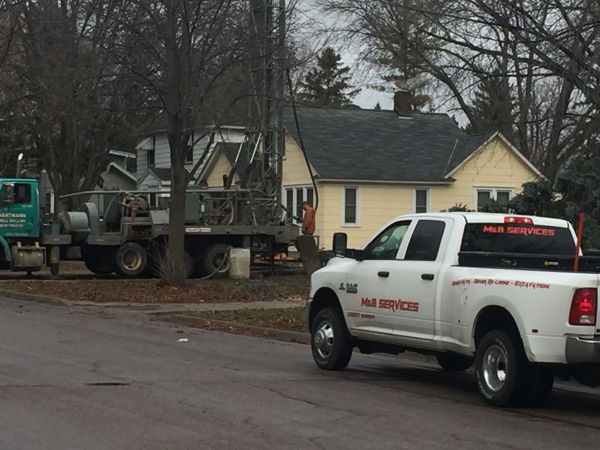
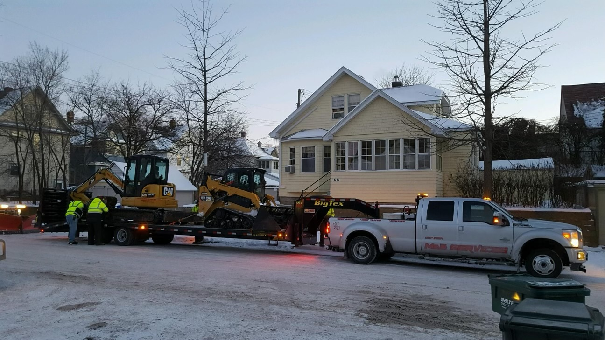

We have worked with many different house owners to improve their sewer and water systems. We always make sure that you can get a reliable sewer system and clean water to your house without a problem.
The equipment we have allows us to do deep sewer and water excavations, sand rock tunnel work, and other major projects. We also can provide you with a method to expand the lifetime of your sewer pipline while not letting it disrupt your yard.

